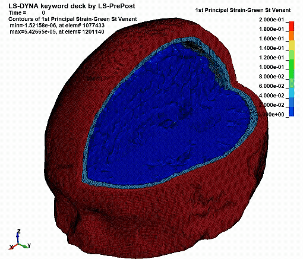

Extension: Simulation-supporting files
Scope of this page
After the mesh creation step, the pipeline produces a subject-specific brain mesh in LS-DYNA keyword (.k) format. This page explains what extra files are normally needed alongside that generated mesh if the model is later used for finite element simulation.
This repository does not provide a complete, validated, ready-to-run simulation deck. Instead, it provides an example set of supporting keyword files to show how a generated mesh can be organised for downstream LS-DYNA simulations.
Files needed alongside the generated mesh
A simulation setup normally needs more than the mesh file itself. A reasonable list of files for a subject-specific brain simulation would look like this:
data/subjects/<subject_id>/simulation/
├── run_simulation.k
├── mesh_smoothed_revised.k
├── material_properties.k
├── part_list_full.k
├── set_list.k
├── centre_of_gravity.k
└── acceleration_rugby1.k
The same support files are provided as examples in:
src/dependencies/sim/
| File | Role |
|---|---|
mesh_smoothed_revised.k |
Subject-specific mesh generated by the this pipeline. This is the anatomical model that will be simulated. |
run_simulation.k |
Master keyword file showing the recommended *INCLUDE structure. It collects the mesh, materials, part definitions, sets, centre of gravity, and example loading file. |
material_properties.k |
Example material, section, and hourglass definitions for the main tissue classes. These values are provided for demonstration and must be checked before scientific use. |
part_list_full.k |
LS-DYNA *PART definitions linking each anatomical part ID to a section ID and material ID. Part IDs preserve anatomical labels from the mesh. |
set_list.k |
Example *SET_PART_LIST definitions grouping parts into useful model regions, such as all parts, intracranial solid parts, meninges, skull, and skin. |
centre_of_gravity.k |
Placeholder centre-of-gravity reference node. The coordinates must be replaced with the correct subject/model-specific centre of gravity before running a simulation. |
acceleration_rugby1.k |
Example rugby head-impact kinematic loading file. It is included to show how loading data can be organised, not to define a universal loading condition. |
Part and set definitions are introduced earlier when inspecting the mesh structure. Here, they are only revisited to explain how they fit into a simulation deck.
Example include structure
The provided run_simulation.k file demonstrates the include structure:
*KEYWORD
*INCLUDE
mesh_smoothed_revised.k
*INCLUDE
material_properties.k
*INCLUDE
part_list_full.k
*INCLUDE
set_list.k
*INCLUDE
centre_of_gravity.k
*INCLUDE
acceleration_rugby1.k
*END
Each *INCLUDE card points to one keyword file. In practice, users should copy the example support files into a subject-specific simulation folder, then edit the paths or filenames so they match the generated mesh and any customised simulation inputs.
If a support file has been exported from LS-PrePost as a complete standalone keyword file, it may contain its own *KEYWORD and *END lines. For a clean include-based simulation deck, keep *KEYWORD and *END in the master file and check whether nested wrappers need to be removed from included fragments.
Material and part assignment
The generated mesh uses LS-DYNA part IDs to preserve anatomical regions. The part_list_full.k file assigns those part IDs to material IDs through *PART cards. For example, cerebral cortex parts are assigned to grey matter material properties, cerebral white matter and corpus callosum parts are assigned to white matter material properties, ventricles and CSF spaces are assigned to CSF properties, and meninges are assigned shell material definitions.
The material assignment is intentionally separate from the mesh. This means material parameters can be reviewed or updated without regenerating the subject-specific anatomical mesh.
Important: The provided material file is an example. Users should verify material models, density, units, section definitions, hourglass settings, and any validation assumptions before using the model for a new scientific or clinical question.
Centre of gravity
The centre of gravity is needed when head kinematics are applied or interpreted about a reference point. This is particularly important for rotational acceleration because the selected reference point changes how the motion is applied to the model.
The provided centre_of_gravity.k file contains a placeholder reference node:
*NODE
999999 0.0 0.0 0.0
The 0.0 0.0 0.0 coordinates are not intended to be used directly. They should be replaced with the correct centre-of-gravity coordinates for the model and coordinate system being simulated.
Example acceleration file
The acceleration_rugby1.k file provides an example rugby impact loading file. It demonstrates how impact kinematics can be stored separately from the mesh and then included through the master simulation file.
The example loading file should be treated as demonstration data only. Users should replace it with loading curves that match their own impact, experimental setup, unit system, filtering choices, and modelling assumptions.
What is still required for a real simulation
The files above explain the minimum supporting structure around the generated mesh, but a real LS-DYNA simulation may also require additional cards depending on the modelling question, for example:
- contact definitions;
- boundary conditions or prescribed motion cards;
- solver controls and timestep settings;
- damping or mass-scaling choices;
- database output requests;
- termination time;
- checks for unit consistency;
- model validation against relevant experimental or clinical data.
Therefore, this page should be read as an explanation of the supporting files needed around the generated mesh, not as a guarantee that the example files form a complete simulation setup.
Example simulation output
A finite element simulation can output time-dependent mechanical responses of the head model, such as nodal displacement, velocity, acceleration, pressure, stress, strain, and strain rate, depending on the requested LS-DYNA database outputs. These raw outputs are usually inspected in LS-PrePost and may then be further post-processed to calculate derived brain injury metrics.
The animation below shows an example of a post-processed strain visualisation. It is not a direct mesh-generation output, and the displayed first Lagrange strain field requires additional simulation setup and post-processing after the LS-DYNA run.

Applications
After the subject-specific brain mesh has been combined with appropriate simulation files, it can be used for downstream finite element studies of head impact biomechanics. Example applications include:
- Estimating tissue-level brain response under head impact loading. FE head models have been used to estimate intracranial pressure, stress, strain, and strain rate under impact conditions, supporting studies of traumatic brain injury mechanisms. See Mao et al. (2013) and Madhukar & Ostoja-Starzewski (2019).
- Evaluating injury metrics and impact severity. Simulations can be used to compare kinematic injury predictors with tissue-level brain responses, such as strain-based metrics. See Kleiven (2007).
- Comparing subject-specific anatomy or loading conditions. Subject-specific meshes allow researchers to study how anatomical variation, impact direction, rotational acceleration, or loading duration may influence predicted brain deformation.
- Testing modelling assumptions. Simulation studies depend on material properties, contacts, boundary conditions, and validation strategy. Brain material behaviour is commonly described using viscoelastic or hyper-viscoelastic formulations informed by experimental tissue testing. See Miller & Chinzei (2002) and Hrapko et al. (2006).
The simulation-related files provided here are intended only as a starting point for simulation preparation. They should be reviewed, adapted, and validated according to the specific research question, solver version, loading condition, and material model being used.